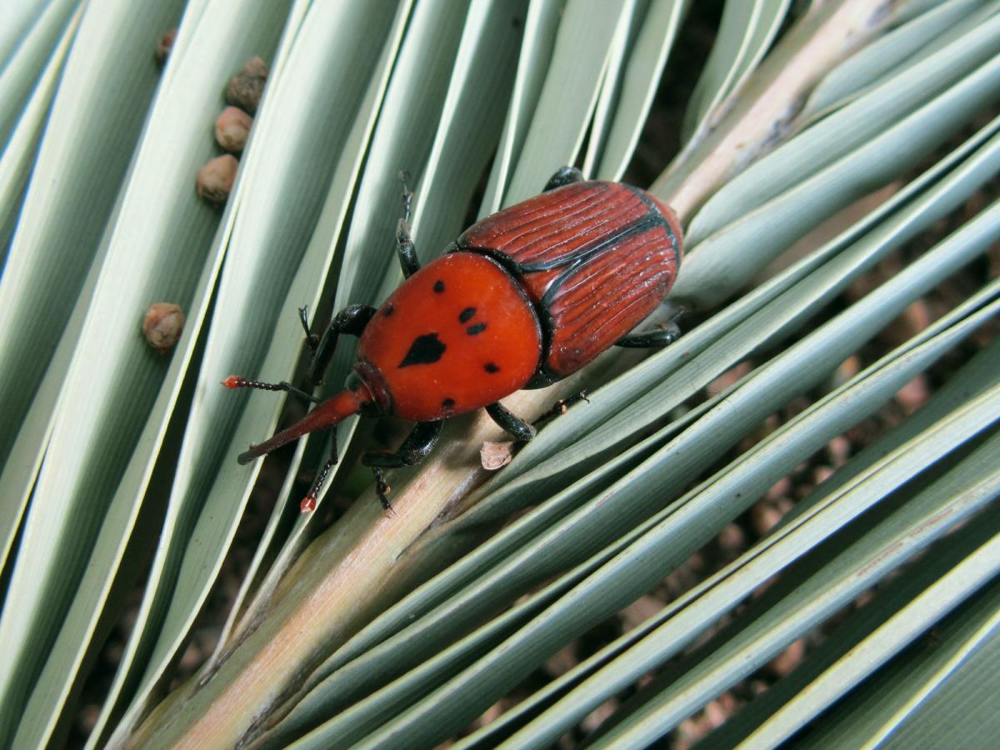

Inspección
Examinamos la planta para detectar plagas o enfermedades.


Los tratamientos fitosanitarios son esenciales para mantener la salud de nuestras plantas y árboles. Las plagas y enfermedades pueden debilitar e incluso llegar a matar a los ejemplares si no se tratan a tiempo. Un diagnóstico precoz y una aplicación adecuada de productos fitosanitarios permiten controlar eficazmente estos problemas y preservar el valor ornamental, ambiental y económico de nuestras zonas verdes.
Además, en Turia Jardín apostamos por la lucha integrada y el uso responsable de productos fitosanitarios, priorizando siempre aquellos que minimizan el impacto ambiental y protegen la salud de las personas y los animales. Realizamos aplicaciones terrestres y, cuando es necesario, tratamientos endoterápicos para llegar directamente al sistema vascular de la planta.
En Turia Jardín conocemos a fondo las plagas y enfermedades más comunes en la cuenca Mediterránea.
Aplicamos tratamientos específicos para cada caso, utilizando productos de última generación y aplicando las técnicas más avanzadas para garantizar la máxima eficacia.

Examinamos la planta para detectar plagas o enfermedades.
Seleccionamos y preparamos el producto adecuado para cada caso.
Realizamos la aplicación con equipos profesionales y seguros.
Monitorizamos la evolución y aseguramos la eficacia del tratamiento.
Protege tus árboles, arbustos y jardines con tratamientos fitosanitarios profesionales. Presupuesto gratuito y sin compromiso.